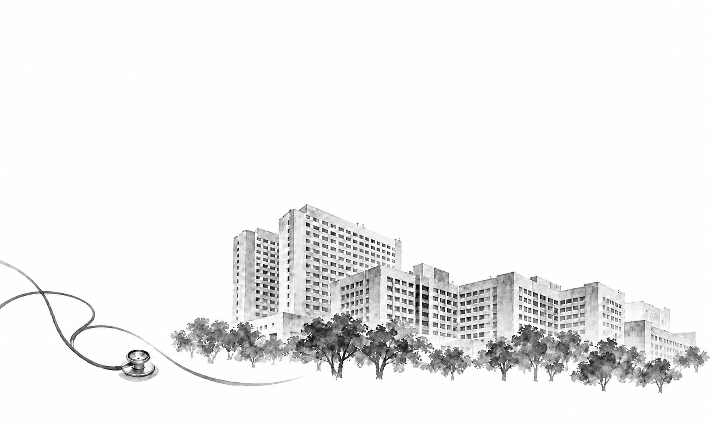
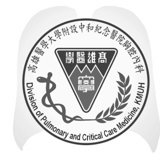

1為什麼肺癌病人更需要打疫苗？
感染風險需要重視
感染是肺癌病人在診斷後第一年內，除了肺癌本身之外的第二大主要死因。
治療期間更需要保護
肺癌本身或化療等療程會暫時削弱免疫系統，使併發嚴重感染的風險顯著高於一般人。
接種非活性疫苗的目的
不僅是「預防感染」，更重要的是在不慎感染時，大幅減輕症狀嚴重度、降低住院率與死亡風險。
2疫苗對肺癌病人的保護力有多少？
50–90%
根據美國臨床腫瘤學會臨床指引引用的多項大型研究數據，非活性疫苗能為肺癌病人提供顯著的保護效果，依疫苗別的不同，提升約 50–90% 的保護力。
3溫馨提醒與防護建議
依醫師建議接種適合的非活性疫苗。
在人多或流行期間，配戴口罩、勤洗手，維持良好個人衛生。
避免前往人多擁擠的場所。
保持均衡飲食、適度運動、充足睡眠，維持良好免疫力。
疫苗是肺癌治療路上的重要守護夥伴，
讓您更安心，也更有力量面對治療！
接種前，先與主治醫師討論
肺癌病人疫苗施打建議
疫苗公費資格與自費價格可能變動，請以最新公告及院所資訊為準。
| 疫苗種類 | 公費施打對象 | 自費價格 | 補充說明 |
|---|---|---|---|
| 流感疫苗 | 重大疾病， 符合公費施打 | — |
|
| 肺炎鏈球菌疫苗 |
|
|
|
| 新冠疫苗 | 重大疾病， 符合公費施打 | — |
|
| 帶狀疱疹疫苗 | 無公費 | Shingrix：約 9000 元／劑；共 2 劑。 |
|
| 呼吸道融合病毒疫苗 | 無公費 |
|
|
| 百日咳疫苗 | 無公費 |
|
|
溫馨提醒：接種前請先與主治醫師確認是否適合施打及接種時機；疫苗公費資格與自費價格可能變動，請以最新公告及院所資訊為準。
原版衛教單張
衛教圖文點選可開啟大圖。最近更新日期 2026.11
展開兩頁原版單張